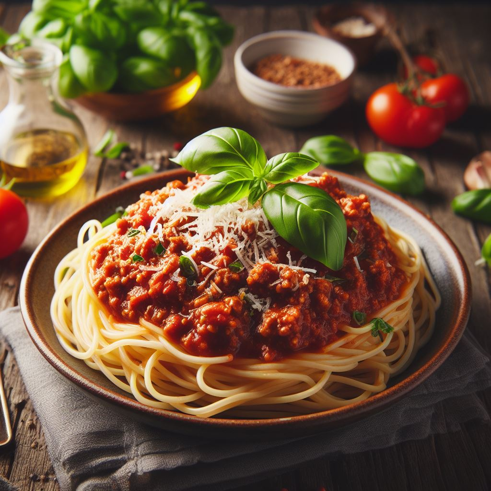

Spaghetti Bolognese

Description
Spaghetti Bolognese is a classic Italian dish made with spaghetti, ground beef, and a rich tomato sauce. It is a hearty and comforting dish that is perfect for a weeknight meal or a special occasion.
Here is a more detailed description of the different elements of Spaghetti Bolognese:
- Spaghetti: Spaghetti is a long, thin pasta that is ideal for Spaghetti Bolognese because it pairs well with the rich tomato sauce.
- Bolognese Sauce: The sauce for Spaghetti Bolognese is typically made with ground beef, tomatoes, garlic, and herbs. However, you can also use other types of meat, such as pork or veal.
- Cheese: Spaghetti Bolognese is typically topped with grated Parmesan cheese. However, you can also use other types of cheese, such as Pecorino Romano.
Ingredients
- 1 pound spaghetti
- 1 onion, chopped
- 1 pound lean ground beef
- 2 (26 ounce) jars marinara sauce
- 2 cloves garlic, minced
- 1/4 cup fresh basil leaves, chopped
- 1/4 cup fresh parsley leaves, chopped
- 1/4 cup grated Parmesan cheese
Steps
- Step 1: Bring a large pot of lightly salted water to a boil. Add spaghetti and cook until al dente, about 8 minutes; drain.
- Step 2: Meanwhile, brown ground beef and onion in a large skillet over medium heat; stir in marinara sauce, garlic, basil and parsley and simmer for 15 minutes.
- Step 3: Toss the cooked spaghetti with the sauce until well coated. Serve hot with a sprinkle of grated Parmesan cheese on top.